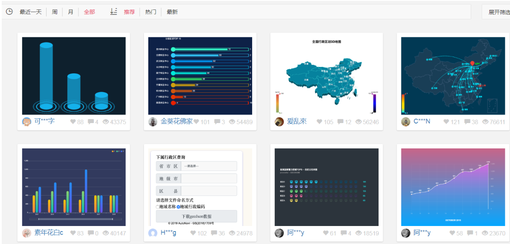

Echarts-介绍
常见的数据可视化库：
D3.js 目前 Web 端评价最高的 Javascript 可视化工具库(入手难)
ECharts.js 百度出品的一个开源 Javascript 数据可视化库
Highcharts.js 国外的前端数据可视化库，非商用免费，被许多国外大公司所使用
AntV 蚂蚁金服全新一代数据可视化解决方案 等等
Highcharts 和 Echarts 就像是 Office 和 WPS 的关系
ECharts，一个使用 JavaScript 实现的开源可视化库，可以流畅的运行在 PC 和移动设备上，兼容当前绝大部分浏览器（IE8/9/10/11，Chrome，Firefox，Safari等），底层依赖矢量图形库 ZRender，提供直观，交互丰富，可高度个性化定制的数据可视化图表。
大白话：
是一个JS插件
性能好可流畅运行PC与移动设备
兼容主流浏览器
提供很多常用图表，且可定制。
Echarts-体验
官方教程：五分钟上手ECharts
使用步骤：
引入
echarts插件文件到html页面中准备一个具备大小的
DOM容器1
<div id="main" style="width: 600px;height:400px;"></div>
初始化
echarts实例对象1
var myChart = echarts.init(document.getElementById('main'));
指定配置项和数据(
option)1
2
3
4
5
6
7
8
9
10
11
12
13var option = {
xAxis: {
type: 'category',
data: ['Mon', 'Tue', 'Wed', 'Thu', 'Fri', 'Sat', 'Sun']
},
yAxis: {
type: 'value'
},
series: [{
data: [820, 932, 901, 934, 1290, 1330, 1320],
type: 'line'
}]
};将配置项设置给
echarts实例对象1
myChart.setOption(option);
Echarts-基础配置
这是要求同学们知道以下配置每个模块的主要作用干什么的就可以了
需要了解的主要配置：
seriesxAxisyAxisgridtooltiptitlelegendcolor
series
- 系列列表。每个系列通过
type决定自己的图表类型 - 大白话：图标数据，指定什么类型的图标，可以多个图表重叠。
- 系列列表。每个系列通过
xAxis：直角坐标系 grid 中的 x 轴
- boundaryGap: 坐标轴两边留白策略 true，这时候刻度只是作为分隔线，标签和数据点都会在两个刻度之间的带(band)中间。
yAxis：直角坐标系 grid 中的 y 轴
grid：直角坐标系内绘图网格。
title：标题组件
tooltip：提示框组件
legend：图例组件
color：调色盘颜色列表
数据堆叠，同个类目轴上系列配置相同的
stack值后 后一个系列的值会在前一个系列的值上相加。
1 | option = { |
柱状图图表（两大步骤）
- 官网找到类似实例， 适当分析，并且引入到HTML页面中
- 根据需求定制图表
引入到html页面中
1
2
3
4
5
6
7
8
9
10
11
12
13
14
15
16
17
18
19
20
21
22
23
24
25
26
27
28
29
30
31
32
33
34
35
36
37
38
39
40
41
42
43
44
45
46
47// 柱状图1模块
(function() {
// 实例化对象
let myChart = echarts.init(document.querySelector(".bar .chart"));
// 指定配置和数据
let option = {
color: ["#3398DB"],
tooltip: {
trigger: "axis",
axisPointer: {
// 坐标轴指示器，坐标轴触发有效
type: "shadow" // 默认为直线，可选为：'line' | 'shadow'
}
},
grid: {
left: "3%",
right: "4%",
bottom: "3%",
containLabel: true
},
xAxis: [
{
type: "category",
data: ["Mon", "Tue", "Wed", "Thu", "Fri", "Sat", "Sun"],
axisTick: {
alignWithLabel: true
}
}
],
yAxis: [
{
type: "value"
}
],
series: [
{
name: "直接访问",
type: "bar",
barWidth: "60%",
data: [10, 52, 200, 334, 390, 330, 220]
}
]
};
// 把配置给实例对象
myChart.setOption(option);
})();根据需求定制
- 修改图表柱形颜色 #2f89cf
修改图表大小 top 为 10px bottom 为 4% grid决定我们的柱状图的大小
1
2
3
4
5
6
7
8color: ["#2f89cf"],
grid: {
left: "0%",
top: "10px",
right: "0%",
bottom: "4%",
containLabel: true
},X轴相关设置 xAxis
- 文本颜色设置为 rgba(255,255,255,.6) 字体大小为 12px
- X轴线的样式 不显示
1
2
3
4
5
6
7
8
9
10
11
12
13
14
15
16// 设置x轴标签文字样式
// x轴的文字颜色和大小
axisLabel: {
color: "rgba(255,255,255,.6)",
fontSize: "12"
},
// x轴样式不显示
axisLine: {
show: false
// 如果想要设置单独的线条样式
// lineStyle: {
// color: "rgba(255,255,255,.1)",
// width: 1,
// type: "solid"
}
}Y 轴相关定制
- 文本颜色设置为 rgba(255,255,255,.6) 字体大小为 12px
- Y 轴线条样式 更改为 1像素的 rgba(255,255,255,.1) 边框
- 分隔线的颜色修饰为 1像素的 rgba(255,255,255,.1)
1
2
3
4
5
6
7
8
9
10
11
12
13
14
15
16
17
18
19// y 轴文字标签样式
axisLabel: {
color: "rgba(255,255,255,.6)",
fontSize: "12"
},
// y轴线条样式
axisLine: {
lineStyle: {
color: "rgba(255,255,255,.1)",
// width: 1,
// type: "solid"
}
5232},
// y 轴分隔线样式
splitLine: {
lineStyle: {
color: "rgba(255,255,255,.1)"
}
}修改柱形为圆角以及柱子宽度 series 里面设置
1
2
3
4
5
6
7
8
9
10
11
12
13
14series: [
{
name: "直接访问",
type: "bar",
// 修改柱子宽度
barWidth: "35%",
data: [10, 52, 200, 334, 390, 330, 220],
itemStyle: {
// 修改柱子圆角
barBorderRadius: 5
}
}
]
};更换对应数据
1
2
3
4// x轴中更换data数据
data: [ "旅游行业","教育培训", "游戏行业", "医疗行业", "电商行业", "社交行业", "金融行业" ],
// series 更换数据
data: [200, 300, 300, 900, 1500, 1200, 600]让图表跟随屏幕自适应
1
2
3window.addEventListener("resize", function() {
myChart.resize();
});
柱状图2定制
- 官网找到类似实例， 适当分析，并且引入到HTML页面中
- 根据需求定制图表
需求1： 修改图形大小 grid
1 | // 图标位置 |
需求2： 不显示x轴
1 | xAxis: { |
需求3： y轴相关定制
- 不显示y轴线和相关刻度
1 | //不显示y轴线条 |
- y轴文字的颜色设置为白色
1 | axisLabel: { |
需求4： 修改第一组柱子相关样式（条状）
1 | name: "条", |
- 设置第一组柱子内百分比显示数据
1 | // 图形上的文本标签 |
- 设置第一组柱子不同颜色
1 | // 声明颜色数组 |
需求5： 修改第二组柱子的相关配置（框状）
1 | name: "框", |
需求6： 给y轴添加第二组数据
1 | yAxis: [ |
需求7： 设置两组柱子层叠以及更换数据
1 | // 给series 第一个对象里面的 添加 |
完整代码：
1 | // 柱状图2 |
折线图1 人员变化模块制作
- 官网找到类似实例， 适当分析，并且引入到HTML页面中
- 根据需求定制图表
需求1： 修改折线图大小，显示边框设置颜色：#012f4a，并且显示刻度标签。
1 | // 设置网格样式 |
需求2： 修改图例组件中的文字颜色 #4c9bfd， 距离右侧 right 为 10%
1 | // 图例组件 |
需求3： x轴相关配置
- 刻度去除
- x轴刻度标签字体颜色：#4c9bfd
- 剔除x坐标轴线颜色（将来使用Y轴分割线)
- 轴两端是不需要内间距 boundaryGap
1 | xAxis: { |
需求4： y轴的定制
- 刻度去除
- 字体颜色：#4c9bfd
- 分割线颜色：#012f4a
1 | yAxis: { |
需求5： 两条线形图定制
- 颜色分别：#00f2f1 #ed3f35
- 把折线修饰为圆滑 series 数据中添加 smooth 为 true
1 | color: ['#00f2f1', '#ed3f35'], |
需求6： 配置数据
1 | // x轴的文字 |
1 | // 图标数据 |
需求7： 新增需求 点击 2020年 2021年 数据发生变化
以下是后台送过来数据（ajax请求过来的）
1 | var yearData = [ |
- tab栏切换事件
- 点击2020按钮 需要把 series 第一个对象里面的data 换成 2020年对象里面data[0]
- 点击2020按钮 需要把 series 第二个对象里面的data 换成 2020年对象里面data[1]
- 2021 按钮同样道理
完整代码：
1 | // 折线图1模块制作 |
折线图2 播放量模块制作
- 官网找到类似实例， 适当分析，并且引入到HTML页面中
- 根据需求定制图表
需求1： 更换图例组件文字颜色 rgba(255,255,255,.5) 文字大小为12
1 | legend: { |
需求2： 修改图表大小
1 | grid: { |
需求3： 修改x轴相关配置
- 修改文本颜色为rgba(255,255,255,.6) 文字大小为 12
- x轴线的颜色为 rgba(255,255,255,.2)
1 | // 文本颜色为rgba(255,255,255,.6) 文字大小为 12 |
需求4： 修改y轴的相关配置
1 | axisTick: { show: false }, |
需求5： 修改两个线模块配置(注意在series 里面定制)
1 | //第一条 线是圆滑 |
1 | name: "转发量", |
需求6： 更换数据
1 | // x轴更换数据 |
饼形图 1年龄分布模块制作
- 官网找到类似实例， 适当分析，并且引入到HTML页面中
- 根据需求定制图表
定制图表需求1：
- 修改图例组件在底部并且居中显示。
- 每个小图标的宽度和高度修改为 10px
- 文字大小为12 颜色 rgba(255,255,255,.5)
1 | legend: { |
定制需求2：
- 修改水平居中 垂直居中
- 修改内圆半径和外圆半径为 [“40%”, “60%”] pink老师友情提示，带有直角坐标系的比如折线图柱状图是 grid修改图形大小，而我们饼形图是通过 radius 修改大小
1 | series: [ |
定制需求3：更换数据
1 | // legend 中的data 可省略 |
定制需求4： 更换颜色
1 | color: [ |
1 | // 4. 让图表跟随屏幕自动的去适应 |
饼形图2 地区分布模块制作（南丁格尔玫瑰图）
- 官网找到类似实例， 适当分析，并且引入到HTML页面中
- 根据需求定制图表
第二步：按照需求定制
- 需求1：颜色设置
1 | color: ['#006cff', '#60cda0', '#ed8884', '#ff9f7f', '#0096ff', '#9fe6b8', '#32c5e9', '#1d9dff'], |
- 需求2：修改饼形图大小 ( series对象)
1 | radius: ['10%', '70%'], |
- 需求3： 把饼形图的显示模式改为 半径模式
1 | roseType: "radius", |
- 需求4：数据使用更换（series对象 里面 data对象）
1 | { value: 20, name: '云南' }, |
需求5：字体略小些 10 px ( series对象里面设置 )
饼图图形上的文本标签可以控制饼形图的文字的一些样式。 label 对象设置
1 | series: [ |
- 需求6：防止缩放的时候，引导线过长。引导线略短些 (series对象里面的 labelLine 对象设置 )
- 连接图表 6 px
- 连接文字 8 px
1 | + // 文字调整 |
- 需求7：浏览器缩放的时候，图表跟着自动适配。
1 | // 监听浏览器缩放，图表对象调用缩放resize函数 |
Echarts-社区介绍
社区就是一些，活跃的echart使用者，交流和贡献定制好的图表的地方。

- 在这里可以找到一些基于echart的高度定制好的图表，相当于基于jquery开发的插件，这里是基于echarts开发的第三方的图表。
Echarts-map使用（扩展）
参考社区的例子：https://gallery.echartsjs.com/editor.html?c=x0-ExSkZDM (模拟飞机航线)
实现步骤：
- 第一需要下载china.js提供中国地图的js文件
- 第二个因为里面代码比较多，我们新建一个新的js文件 myMap.js 引入
- 使用社区提供的配置即可。
需要修改：
- 去掉标题组件
- 去掉背景颜色
- 修改地图省份背景 #142957 areaColor 里面做修改
- 地图放大通过 zoom 设置为1.2即可
1 | geo: { |
总结：这例子是扩展案例，大家以后可以多看看社区里面的案例。
最后约束缩放
1 | /* 约束屏幕尺寸 */ |